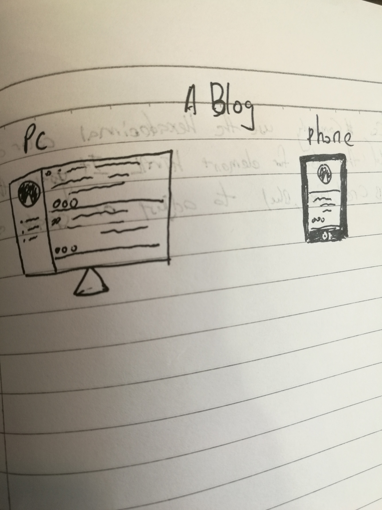

Sometimes user not only use the computer to visit the website, they also have use mobile device. So that is the importance of viewport because it can detect the size and resolution of screen and adjust the layout of content, if no the layout will be mess or the content will be confused, because some of the website is designed as a deskstop type, so the purpose is let the mobile device user convenience. when the designer create the webpage they can set the viewport on HTML, like this .
